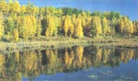
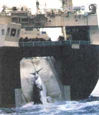

BITS & PIECES
Where one tree ends and another begins isn't always cut and dried. Imagine, for instance, a light wind gently rocking a forest full of quaking aspen trees in Utah's Wasatch mountains. A pleasant scene, but not terribly unusual, right? Wrong. This most usual group of trees has one unusual root system that supports all of the aspen grove's 47,000 trees.
This means that all these trees are considered one singular unit. The gargantuan mass spans 106 acres and weighs approximately 13.2 million pounds, surpassing the blue whale, the giant sequoia tree, and the world's largest soil fungus in sheer mass. It is, in fact, the largest living thing known to humankind.
Word got out when a team of Colorado professors, Michael Grant, Jeffrey Mitton, and Lan Linhart, wrote a letter about the aspen grove to the English Journal of Nature. They pointed out that all 47,000 stems began with one little seed. Of course the question everyone's asking now is how so many stems could spring from one root system. The answer is in the aspens' method of reproduction, Grant says. Most trees reproduce sexually, through airborne pollen. Aspens, he says, are the exception. "Wherever aspens occur, they most commonly reproduce asexually, through the root. Vertical shoots grow upwards forming trunks [or stems]."
Their method of root reproduction also makes aspens difficult to get rid of-the mother-in-law of plant life. You can clear-cut a whole hillside of aspens and the roots remain intact. Stems will pop right back up, claims Mitton. Luckily, the tree species is in no way a pest we have to worry about.
Because most aspen groves result from root reproduction, you'd think there'd be plenty more massive growths like the one in Utah. In fact, Grant says, other aspen groves boast even more stems, but usually these young stems die off.
So the next time you're out walking in the woods, keep a lookout for aspens that cluster together and clone one another. Similar leaf shapes, bark colors, and branch angles are tip-offs that they all share the root equivalent of an umbilical cord. Perhaps you'll discover an even larger living thing.
It takes 15 to 20 minutes to kill a whale-that and a whaler wielding an exploding harpoon. Unfortunately for whales, this gruesome nightmare will become a reality for many of them if Japan has its way.
At an International Whaling Commission (IWC) meeting this summer, Japan will move to kill minke whales for profit. Minkes are small baleen whales; most of their cousins-the larger baleens-have dwindled at alarmingly high rates over the past century. The gray whale is extinct, and there are only about 3,000 right whales and 2,000 blues left in the world. Humpbacks have plummeted from 150,000 to a measly 12,000. The fear of the whales' total extinction has led to the formation of the IWC and a moratorium on hunting the larger baleens.
Whales are harpooned and then sold as choice cuts for
$200.
Why all the killings? Some countries claim that whales swallow up their fish supply. But it's the meat market that sparks the hunting in Japan, according to Dan Morast, director of Earth Trust's Save the Whales Program. Choice cuts of whale meat go for $200 there. So if the IWC says no way to its whaling request, Japan is likely to terminate its membership and team up with China, Korea, and Russia. Their mission will likely be commercial whaling. Iceland, Norway, Greenland, and Denmark's Faroe Islands, located in the North Atlantic, have already taken steps to form their own group: the North Atlantic Marine Mammal Commission. This group plans to form policies independent of the conservationist IWC. So far, Iceland has pulled out of the IWC and Norway is threatening to.
Minkes still occur in healthy numbers but won't for much longer if Japan and company start hunting them legally. All whales are constantly threatened by pirate whalers, who kill them in the dead of night and never report it.
You can help the whales' plight by adopting one. Your money will go towards their protection and you'll have regular updates on the progress of your whale as well as cards, photos, newsletters, whale watching coupons etc., depending on the organization you adopt from.
•Adopt a humpback by sending $15 to: Whale Adoption Project, 634 North Falmouth Highway, Box 388, Dept. ME, North Falmouth, MA; 508/546-9980.
•Adopt a finback by sending $30 to: Finbacks, College of the Atlantic, Bar Harbor, ME 04609; 207/288-5644.
There are two types of people in this world: those who view insects as beneficial friends and those who view insects as winged lilliputian monsters. However, there is one insect that even the latter cannot detest-a virtual flying work of art, the butterfly. Seeing as the butterfly season is here, Noreen Damude of the National Wild-flower Research Center offers the following ways to attract butterflies to your garden:
•Butterflies enjoy perching on edges, so plant low flowers at the edge of your lawn and high flowers at the edges of trees or along fences.
•Locate a major part of the garden in a sunny, protected area. Butterflies are coldblooded and need sunshine to raise their body temperatures enough to fly on cool mornings. Place flat stones at various sunny locations in the garden for butterflies to bask on.
•Use large splashes of color. Butterflies are first attracted to flowers by color, so a large flower mass is easier for them to spot. Members of the Compositae family, such as asters, coreopsis, boneset, goldenrods, and sunflowers, are excellent nectar sources.
•Leave young and old trees; butterflies like to perch on them and larvae may use them for food. Small trees such as hawthorns, buckeyes, and sumacs offer nectar and shelter.
•Provide host plants for butterfly larvae food. Don't get overly attached to the larval host plants, though, or you'll be upset when you see hungry caterpillars eating them to shreds. However, the caterpillars will repay you indirectly over time by pollinating other plants once they become butterflies.
•Try to leave dead and hollow stumps and thick brush under some of the trees for butterflies to hide from predators and find warmth on rainy or colder days.
•Provide damp areas or make available shallow puddles.
•Don't use insecticides, herbicides, or fungicides anywhere near your butterfly garden, the larval food plants, or the adult nectar sources because they can kill larvae and adult butterflies. Treat pest problems by plucking the offending insects off garden plants with your fingers.
Editor's note: If you have interesting, timely, or even peculiar news items you'd like to share with readers, please send them to "Bits & Pieces," Mother Earth News , P.O. Box 129, Arden, NC 28794. Please also send accompanying photographs if you have them.
|
 PAT AND TOM LEESON/PHOTO RESEARCHERS INC. |
 GREENPEACE/CULLEY |
|